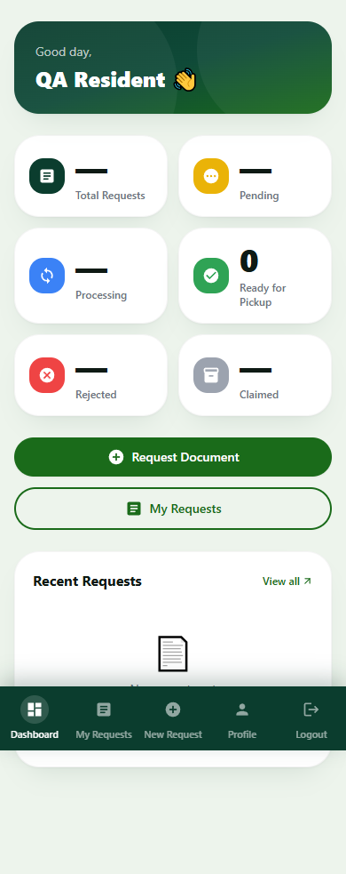
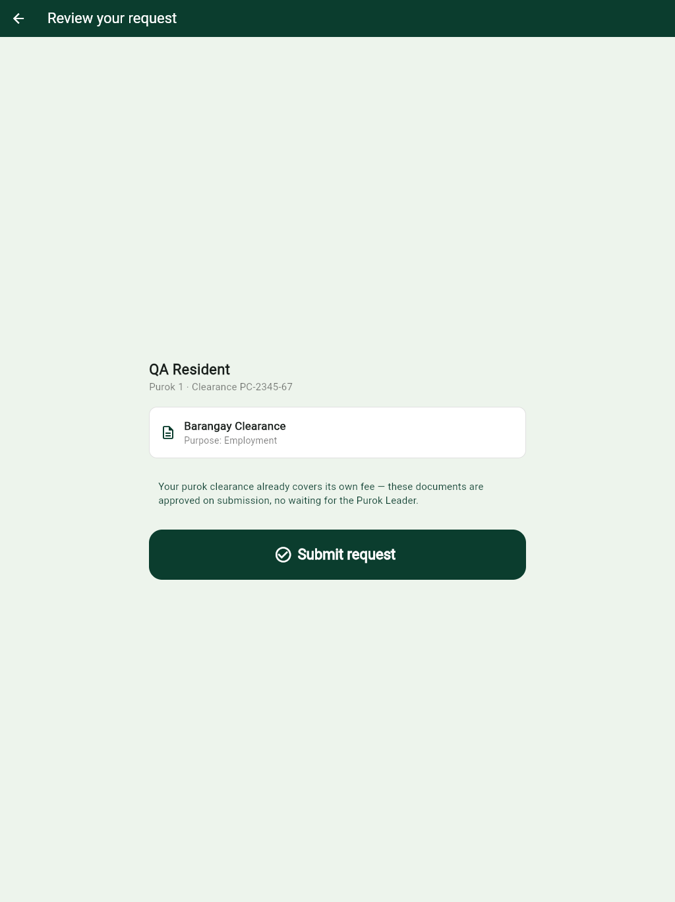

iRequestDologon QA report
Reviewed: 3 October 2026 · Web admin, resident website, resident app, and kiosk
Recommendation: hold production sign-off until the payment and authorization defects below are fixed. The interfaces and core workflows are developed enough for structured acceptance testing, but the current code permits incorrect payment status, inconsistent account restrictions, and inaccurate financial reporting. These issues matter more than further visual polishing.
This assessment covers the current working files in D:\irqadmin\irq-admin and D:\irequestd, including changes already present when QA began. Application source was not modified. The new files are this report, test reproductions, results, and screenshots.
What was actually tested
| Area | Work performed | Result and limit |
|---|---|---|
| Web admin | Production build; login validation; browser checks of Secretary dashboard, Collector payments/reports, Captain users/documents, Purok Leader requests | Build passed. Tested pages rendered with synthetic/empty data. Real staff login and database workflows were not exercised. |
| Resident website | Production build; login/signup/password recovery screens; dashboard, requests and new-request screens; simulated API outage; payment success page | Build passed. Reproduced dashboard, failure-state, and payment-confirmation defects. |
| Browser coverage | 18 page/viewport scenarios in headless Chrome; 13 automated accessibility scans; desktop and 390px mobile layouts | No uncaught page errors or horizontal document overflow in these scenarios. This is not full responsive or accessibility certification. |
| Kiosk | Flutter web production build; synthetic clearance verification, document selection, submission, amount display, Done/reset, pricing outage, inactivity | Build and mocked walkthrough passed. Ordinary pointer input returned to idle after 63 seconds. Accessibility-action inactivity behaved differently; see recommendations. |
| Resident app | Flutter static analysis; API/client integration review; isolated tests of its real backend routes | Analysis found 76 issues: 14 warnings and 62 informational items, no analyzer errors. Native Android/iOS execution was not tested. |
| Backend | Real Express routes/controllers with synthetic JWTs, in-memory database doubles, mocked SMS/email/payment services | 16 defect-oriented checks plus 4 baseline controls. Findings are described individually below; these are not live database or provider tests. |
| Dependencies | npm audit --omit=dev --json in four Node projects |
Registry findings saved for triage; counts do not establish exploitability in this application. |
No staging URL or dedicated QA accounts were supplied during this review. No real payments, SMS/email deliveries, resident record changes, database migrations, or physical printer jobs were performed. Database race and failure tests used controlled doubles; production concurrency remains to be tested. Public visual assets were allowed a short fetch timeout, so screenshots should not be used to diagnose CDN availability.
Fix order
| ID | Priority | Finding | Evidence |
|---|---|---|---|
| QA-01 | Critical | Unsigned webhook can mark a payment and request paid | Isolated HTTP reproduction |
| QA-02 | Critical | Mobile backend gives every staff role broad admin powers | Isolated HTTP reproduction |
| QA-03 | Critical | Paid documents can be submitted through the free endpoint | Isolated controller reproduction |
| QA-04 | High | Disabled residents and staff can still log in through mobile backend | Isolated HTTP reproduction + schema review |
| QA-05 | High | Resident approval rules differ across backends and are not enforced on request creation | Isolated reproduction + route review |
| QA-06 | High | AI service key is packaged in the Flutter application assets | Generated-build inspection |
| QA-07 | High | Mobile payment webhooks fail with the configured JSON middleware order | Isolated HTTP reproduction |
| QA-08 | High | Payment polling leaves the stored amount inconsistent with the checkout total | Isolated controller reproduction |
| QA-09 | High | Financial reports treat the last edit time as the payment date | Source-confirmed logic defect |
| QA-10 | High | Concurrent cash collection can create duplicate payment records | Controlled interleaving; real DB test pending |
| QA-11 | High | Kiosk redemption can consume a clearance without completing the request update | Fault injection + source review |
| QA-12 | High | Password-reset tokens are accepted as normal access tokens | Isolated HTTP reproduction |
| QA-13 | High | Mobile OTP verification has no failed-attempt cap | Isolated reproduction + source review |
| QA-14 | Medium | Ready-for-pickup count is wrong on resident dashboard | Controller and browser reproduction |
| QA-15 | Medium | Payment success page claims success without a reference | Browser reproduction |
| QA-16 | Medium | Service failures appear as empty data or force unnecessary logout | Browser reproduction + mobile source review |
| QA-17 | Medium | Kiosk accepts submission without showing a price when pricing fails | Browser reproduction |
| QA-18 | Medium | Accessibility and password-entry barriers | Automated accessibility scans + browser reproduction |
Critical findings should be resolved before exposing the affected paths to production traffic. High findings should be resolved before release acceptance; Medium findings belong in the next usability and reliability pass.
QA-01 — Payment webhook accepts unauthenticated, unsigned updates
The web backend exposes POST /api/payments/paymongo/webhook without signature verification. An unsigned synthetic event referencing an existing synthetic checkout session returned HTTP 200 and changed both the payment and request to paid; the request also moved to Processing.
This does not require guessing a payment amount or completing a provider payment. Knowing a session identifier is enough for the current handler to trust the supplied event. This was demonstrated only against an isolated local fixture.
Work on: require PayMongo signature validation over the raw body, verify event/session ownership and expected amount/currency, reject stale or repeated events appropriately, and make processing idempotent. A webhook must not rely on a browser session for authentication. PayMongo documents signature checking against the raw payload in its webhook security guidance.
Retest: missing/invalid signatures produce no writes; a valid event updates exactly the intended payment; replaying it changes neither totals nor document state twice.
Source: server/src/routes/payment.routes.js:6; server/src/controllers/payment.controller.js:63.
QA-02 — The second admin API bypasses the main portal's role restrictions
D:\irequestd\backend\routes\admin.js checks only whether the JWT contains isAdmin. The route does not enforce operation-specific roles or Purok scope. A synthetic Collector token successfully changed a document price to one centavo through /api/admin/prices/:documentType and received HTTP 200. The same router exposes resident approvals, request status changes, and Purok decisions behind that broad check.
Work on: remove unused alternate admin endpoints or give them the same role and scope rules as the main backend. Load current staff permissions from the database. Test Secretary, Collector, Captain and Purok Leader against every sensitive operation, including direct API calls. This follows OWASP's guidance to validate authorization on every request.
Retest: a Collector cannot modify prices or approve residents; a Purok Leader cannot view or act on another Purok's records. The main admin role middleware correctly rejected a Collector for a Captain-only operation in the baseline check.
Source: D:\irequestd\backend\routes\admin.js:21, :109, :192, :251, :299, :391.
QA-03 — The client decides whether a request is free
The resident website chooses between a paid and free endpoint. The free handler unconditionally writes paymentStatus: 'free' and amountPaid: 0; it does not calculate the price or verify the resident's exemption. An ordinary synthetic resident submitted a Barangay Clearance through /api/my/requests/bulk and the handler created it as free.
Work on: use one server-side pricing decision for every submission. Validate allowed document types, current fees, approved exemption evidence, and the user's approval status. Treat client prices and exemption flags as display data. Also assign the submission channel on the server; the current handler accepts a client-supplied kiosk channel.
Retest: the same document produces the same authoritative charge regardless of endpoint or manipulated local storage. Only documented, approved exemptions produce a free request.
Source: server/src/controllers/resident.request.controller.js:134, :188; client/src/pages/protected/NewRequest.jsx:58, :111.
QA-04 — Deactivation does not apply across all entry points
The mobile backend issued tokens for both a disabled synthetic resident and disabled synthetic staff account. Its general authentication middleware verifies the token without reloading account state. The mobile Prisma User model also lacks the resident active/deletedAt fields recently added in the main repository.
Work on: share a single account-lifecycle rule between backends, align schemas, and check current activity at login and on protected requests. Existing sessions should lose access after deactivation. Password change/reset should also have a deliberate session-revocation policy.
Retest: disable a resident or staff member in admin, then try fresh login and an existing token through both backends; all affected access should be denied.
Source: D:\irequestd\backend\routes\auth.js:385; backend/routes/admin.js:65; backend/middleware/auth.js:4; backend/prisma/schema.prisma:62.
QA-05 — Contact verification and resident approval are mixed together
The mobile registration OTP handler sets isVerified: true, while staff approval also uses that field. Mobile login checks isVerified instead of contactVerified. This can cause an OTP-verified web registrant awaiting staff review to be asked for registration OTP again in the app.
Request creation is also missing an approval gate: a synthetic draft resident received HTTP 201 from the mobile request route. The main web resident middleware permits a contact-verified draft resident, and the creation controllers do not independently require an approved profile. Frontend route guards are not sufficient to enforce this rule.
Work on: define contact verification, profile review, active status, and document-request authorization separately. Enforce approved profile status when creating requests; keep verification endpoints accessible to residents completing onboarding.
Retest: sign up on either channel and continue on the other. Draft, pending, rejected, approved and disabled residents must see consistent states and API permissions.
Source: D:\irequestd\backend\routes\auth.js:318, :407; backend/routes/requests.js:83; server/src/middleware/residentAuth.js; server/src/controllers/resident.request.controller.js:134.
QA-06 — A configured AI service key ships in the app bundle
pubspec.yaml includes .env as an asset. The newly generated kiosk web build contained assets/.env with a non-empty GROQ_API_KEY, even though the kiosk does not need the resident verification service. No key value is included in this report. Key validity or usage was not tested.
Work on: move AI calls behind your authenticated backend, remove service secrets from client assets, and rotate any key already distributed in an app or web build. Review quota restrictions and access logs. This is a known mobile application package secret exposure.
Retest: inspect release APK/IPA/web assets and confirm no reusable service credentials remain. The verification API should apply authentication, authorization and request limits.
Source: D:\irequestd\pubspec.yaml:80; lib/services/groq_secrets.dart:3; lib/services/llama_service.dart:69.
QA-07 — Mobile payment webhooks cannot parse the incoming body correctly
The mobile server installs express.json() before mounting the payment router. The webhook then expects raw bytes and calls req.body.toString(). With the same middleware order, a correctly signed synthetic event received HTTP 400, Invalid signature. Without a configured webhook secret it received HTTP 500 because [object Object] could not be parsed as JSON.
The handler also uses findFirst to update only one request for a checkout session, while the checkout supports multiple requests. That second issue was established by source review, not by a real provider transaction.
Work on: preserve the raw body before JSON parsing, require signature verification, and settle all requests in the basket atomically. Record an event identifier for replay handling. Test the exact event format for the PayMongo API version you deploy.
Retest: valid multi-document checkout event, invalid signature, duplicate event, delayed event, and a user who closes the payment tab before returning. See PayMongo's raw-body requirements.
Source: D:\irequestd\backend\server.js:17; backend/routes/payment.js:208, :221, :232, :238.
QA-08 — Stored payment amounts depend on how confirmation arrives
Web payment creation stores the document amount on the request, then charges document plus Purok fee. Polling verification marks the request paid without updating amountPaid. For a synthetic ₱100 document plus ₱50 Purok fee, the paid request still stored ₱100; Collector's net calculation then displayed ₱50 instead of ₱100. The webhook path writes a different gross amount.
Work on: persist an immutable checkout breakdown: document fee, Purok fee, exemption/discount, total paid, currency and settlement time. Use the same settlement operation for both polling and webhook confirmation. Reports and receipts should read that breakdown.
Retest: browser-return-first, webhook-first and duplicate-confirmation orders must produce identical request, receipt and report amounts. Include fee changes after checkout creation and baskets with multiple documents.
Source: server/src/controllers/resident.payment.controller.js:190, :259; server/src/controllers/payment.controller.js:95; admin/src/pages/collector/Payments.jsx:124.
QA-09 — Editing a request moves income between reporting periods
Financial reports label the date as “date paid” but use request.updatedAt. That timestamp also changes when a document progresses, is completed or is claimed. A payment received in September can consequently appear as October income after an October workflow update.
Work on: use a dedicated immutable paidAt/settledAt from the payment ledger. Separate money collected from request creation, printing, completion and pickup dates. Do not infer historical settlement time from the latest request edit.
Retest: pay a request on one date, complete/claim it later, and confirm the original daily/monthly collection totals remain unchanged.
Source: admin/src/components/reports/FinancialReport.jsx:22, :76, :129; server/prisma/schema.prisma:401; server/src/controllers/release.controller.js:49.
QA-10 — Two cash-collection calls can both pass the unpaid check
Cash collection reads the unpaid request before its transaction, then updates by ID and creates a payment without a conditional state transition. In a controlled interleaving, both calls read unpaid, both returned HTTP 200, and two payment records were created. Real PostgreSQL concurrency was not exercised, so this is a reproduced handler race requiring a database integration test.
Work on: atomically transition unpaid to paid inside the transaction, enforce an appropriate uniqueness/idempotency constraint, and return the original result on a safe retry. A disabled button alone cannot protect against two staff sessions or a network retry.
Retest: simultaneous collection from two terminals and a retry after the response is lost must create exactly one settlement and one receipt record.
Source: server/src/controllers/request.controller.js:210, :235; server/prisma/schema.prisma:260.
QA-11 — Kiosk submission and clearance redemption are not one transaction
Kiosk submission creates requests individually, then consumes the clearance and updates its requests in separate operations. Injecting a failure after the clearance update left it used even though request authorization failed. A failure while creating a later document can also leave an incomplete basket, based on the source structure.
Work on: place request creation, clearance consumption and authorization in one transaction. Add a submission identifier so a lost response can be retried without creating another basket or stranding a consumed code. Send notifications after commit.
Retest: fail each database step, submit the same clearance simultaneously, and lose the HTTP response after commit. The result must be either one complete retrievable submission or no consumed clearance/no partial requests.
Source: server/src/controllers/kiosk.controller.js:178, :214, :241; server/lib/purokClearance.js:113.
QA-12 — Reset tokens can be used for ordinary API access
The mobile backend creates password-reset JWTs with purpose: 'reset', but its general authentication middleware accepts any valid JWT signed with the same key. A synthetic reset-purpose token successfully fetched the resident profile with HTTP 200.
Work on: require an explicit access-token purpose/audience on normal routes and restrict reset tokens to the password-reset endpoint. Make reset authorization single-use and consider invalidating prior sessions after a successful reset.
Retest: access, reset and staff tokens must be rejected outside their intended API scopes.
Source: D:\irequestd\backend\middleware\auth.js:11; backend/routes/auth.js:350.
QA-13 — OTP protections differ materially between backends
Six incorrect OTP submissions against the mobile handler all reached code comparison and returned the same invalid-code response. There is no failed-attempt counter in that route. OTP generation uses Math.random(), and delivery failures print the code in server logs. The main web backend already uses a stronger random generator and a five-attempt cap.
Work on: share the stronger OTP implementation, add account/IP resend and verification limits, remove OTP values from logs, and return an honest delivery-failure state. Ensure resend limits cannot be bypassed by switching channels.
Retest: exhausted OTP, expired OTP, replay, repeated resend, concurrent verification and provider outage. Logs must not contain usable codes.
Source: D:\irequestd\backend\routes\auth.js:20, :43, :288, :481; server/src/controllers/resident.auth.controller.js:26.
QA-14 — Ready-for-pickup count does not match completed documents
The summary endpoint returns Completed, while the dashboard reads only ready or Ready. A browser fixture displayed a completed request and “0 Ready for Pickup” at the same time. A controller fixture with two completed requests also produced a dashboard count of zero.
Work on: define a single response contract and derive pickup count from actual unclaimed completed documents. Use consistent Pending, Processing, Printing, Ready for Pickup, Claimed and Rejected meanings across channels.
Retest: complete two documents, claim one, and check both the website and app counts and pickup lists.
Source: server/src/controllers/resident.request.controller.js:44; client/src/pages/protected/Dashboard.jsx:54. Evidence: dashboard screenshot.

QA-15 — “Payment Successful” is shown without verifying a payment
Opening /payment/success without a refs query parameter displays “Payment Successful!” and “Your payment was received.” This was reproduced without any authenticated session or payment request. It does not itself update the database, but it gives misleading confirmation.
Work on: require a valid reference and a confirmed backend payment state. Missing references should show a neutral “Unable to verify this payment” message with a route to the resident's requests.
Retest: absent, malformed, expired, another resident's and genuinely paid references.
Source: client/src/pages/payment/Success.jsx:19. Evidence: success-without-reference screenshot.

QA-16 — Outages are confused with empty data or invalid sessions
When dashboard API calls were forced to HTTP 503, the resident website displayed “No requests yet” and “Make your first request” without an error or retry action. The app's My Requests screen sets an _error value that is never rendered. Separately, ApiService.getMe() returns null for every non-200 response; startup interprets null as invalid authentication and clears the session even for a server error.
Work on: distinguish loading, empty, stale, offline, unauthorized and server-error states. Preserve cached data/session on transient service failures, offer Retry, and add bounded HTTP timeouts. Do not invite a second submission merely because the original request list failed to load.
Retest: timeout, offline startup, 401, 403, 429, 500/503 and non-JSON proxy responses. Verify existing requests remain distinguishable from an empty account.
Source: client/src/pages/protected/Dashboard.jsx:45; D:\irequestd\lib\my_requests_screen.dart:48; lib/services/api_service.dart:105; lib/main.dart:39. Evidence: outage screenshot.

QA-17 — Kiosk can commit a request without disclosing its price
When the pricing endpoint returned HTTP 503, the kiosk converted the error to an empty price map. The review page omitted the amount and kept Submit enabled. The synthetic successful submission then showed ₱100 due for the first time.
Work on: require a server quote before confirming a paid request, or clearly tell the resident that a quote cannot be obtained and offer retry/staff assistance. Snapshot the agreed quote and handle a price change between review and submission explicitly.
Retest: pricing unavailable, slow, incomplete or changed; a paid request must not silently look free or unpriced at confirmation.
Source: D:\irequestd\lib\kiosk\kiosk_api.dart:64; kiosk_review_screen.dart:30, :207. Evidence: review during pricing outage, amount after submission.


QA-18 — Improve accessibility and permit normal password entry
Automated checks identified low contrast on several pages, unnamed icon buttons, two unlabeled selects on the resident request form and two unlabeled inputs on Collector payments. Both login forms cancel password paste events. Blocking paste/context menus makes password managers and assisted entry harder without protecting server data.
Work on: associate labels with inputs/selects, give icon buttons accessible names, improve text contrast, preserve visible keyboard focus, and allow paste/autofill. Reconsider global right-click/shortcut blocking. Test keyboard navigation and a screen reader, especially modal dialogs and error announcements.
Retest: complete signup, login, a document request and a staff review using only a keyboard; repeat with screen-reader output and 200% zoom. Exact failing selectors are in browser-results.json.
Source examples: client/src/pages/protected/NewRequest.jsx:167; client/src/pages/public/Login.jsx:104, :121; admin/src/pages/auth/Login.jsx; both BrowserProtection.jsx components.
Other release work to consider
| Area | Comment and suggested work |
|---|---|
| Two backend contracts | Maintain a shared specification or common business-service layer. Routes, token claims, OTP storage, verification steps, price shapes and payment creation payloads differ. Merely pointing every client at one existing API will not make them compatible. |
| Resident web deployment | Local .env targets the main backend correctly, and .env.production uses /api. The resident client/vercel.json has a SPA fallback but no API proxy, unlike admin/vercel.json. If hosted as a standalone Vercel site, configure the API origin/rewrite and test a deep-link refresh and real API request. This is deployment-dependent, not a confirmed failure of the live site. |
| Deployment automation | render.yaml installs dependencies/builds the client but does not explicitly run Prisma generation or migration deployment. Confirm the actual release pipeline applies the new account-lifecycle migration before the new server code. Both repositories need one clear migration owner. Do this first on a disposable database. |
| JWT configuration | Main-backend development code accepts raw user IDs when JWT_SECRET is absent. Production rejects that fallback, but a publicly reachable non-production configuration would be unsafe. Require the secret at startup and remove raw-ID authentication from shared environments. |
| Captain revenue definition | The per-Purok report hardcodes ₱50 per paid Completed document and excludes Claimed documents (admin/src/pages/captain/Reports.jsx:29, :69). Confirm whether this is a fixed allocation or actual collected revenue. If it is actual revenue, use settled fee records; claiming a document should not erase collected revenue. |
| Kiosk idle accessibility | Ordinary mouse interaction reset the kiosk after 63 seconds. With Flutter web accessibility actions enabled, the same inactivity check did not return home. The timer listens only to pointer-down events. Start/reset inactivity on navigation and semantic/keyboard actions too; repeat on the real Android kiosk. |
| Kiosk printer UX | The web walkthrough exposed a raw MissingPluginException in the resident-facing success screen. Native printing was not tested. Use a short “Please ask staff for your ticket” message, staff diagnostics, and a controlled reprint function that does not create another request. Keep the reference visible long enough after a printer failure. |
| Admin usability | Rename “RESIDENCE” to “Residents” where it means people; distinguish “Ready for Pickup” from “Claimed.” Add a clear next action and rejection reason to each resident request. Verify mobile tables with realistic long names and large datasets. |
| Performance | Admin's main production JS chunk is 2.41 MB, about 694 KB gzip, with a Vite size warning. Load report/chart/export libraries on demand and measure login/dashboard performance on a slow connection. |
| Automated tests and handover | The inspected Node package scripts expose build/start/dev, without a test suite. The Flutter project has no first-party test directory. Add tests around the defects above and document local setup, environment variables, role permissions, release steps, rollback and printer setup. The current root Flutter README is still the starter template. |
Dependency review snapshot
These are npm's reported package counts as observed during this review. Shared packages appear in multiple projects; do not add these counts as distinct vulnerabilities. A reported advisory is not proof that an exploitable code path exists here.
| Project | High | Moderate | Low | Total reported |
|---|---|---|---|---|
| Admin frontend | 3 | 7 | 0 | 10 |
| Resident frontend | 2 | 3 | 0 | 5 |
| Main backend | 8 | 6 | 1 | 15 |
| Mobile backend | 8 | 3 | 1 | 12 |
Triage the saved audit-*.json files, prioritize reachable server-side dependencies, and update with focused regression checks. Some proposed automatic fixes involve major changes or downgrades; review them individually rather than applying audit fix --force indiscriminately. No dependency upgrades were made.
What is already working well in the tested scope
- Both React production builds and the kiosk web build completed successfully.
- The tested web screens rendered without uncaught browser errors or horizontal overflow at their tested viewport sizes.
- Main admin API checks rejected unpaid printing and a Claimed-to-Processing reversal; its role middleware rejected a Collector for a Captain-only operation.
- The resident middleware rejected requests without a token.
- The kiosk has a short, understandable clearance → document → review → reference flow. Done returned home, the next resident's surname was empty, and ordinary pointer inactivity reset correctly.
- Empty admin login fields produced clear validation messages.
Acceptance tests to run before sign-off
| Scenario | Required outcome |
|---|---|
| Web signup → app login, then app signup → web login | One account, one contact-verification state, correct wizard step and review status |
| Approve, reject, disable and restore a resident | Both channels enforce the change, including existing sessions |
| Every staff role and another Purok's records | Allowed actions succeed; direct API calls cannot bypass permissions |
| Paid, free/exempt and mixed document baskets | Authoritative fees match review, checkout, receipt, Collector and Captain reports |
| Successful, cancelled, delayed and repeated provider events | Exactly one correct settlement; closing the browser does not lose payment confirmation |
| Simultaneous cash collection and repeated submission | No duplicate request, charge, receipt or ledger entry |
| Complete → print → release → claim | Same status/count/reference across admin, web resident and app; payment date does not move |
| Kiosk with interrupted network/power, idle user or repeated clearance | Recoverable submission and no previous resident's details exposed |
| Real kiosk printer: disconnected, denied permission, out of paper, reconnect and reprint | Clear staff recovery path with no duplicate request |
| Physical Android/iOS: denied camera permission, app resume, expired session and offline startup | Clear recovery without losing completed work |
| Restore a backup into a disposable environment | Requests, attachments, payments, audit history and schema remain usable |
Run these with dedicated staging accounts for all four staff roles, approved/pending/rejected/disabled residents, test payment credentials and representative exemption cases. Current observations support fixing the identified issues; they do not certify external provider integration, deployed infrastructure or native device behavior.
Evidence and reproduction files
The report folder contains backend-results.json, browser-results.json, kiosk-results.json, kiosk-pointer-results.json, redacted build notes, npm audit snapshots and screenshots. The reproduce-*.cjs scripts execute the local fixtures and never load application .env files or contact production APIs for their backend tests. See REPRODUCING.md for setup and scope.
Selected visual evidence
All shown residents and requests are synthetic QA fixtures.

